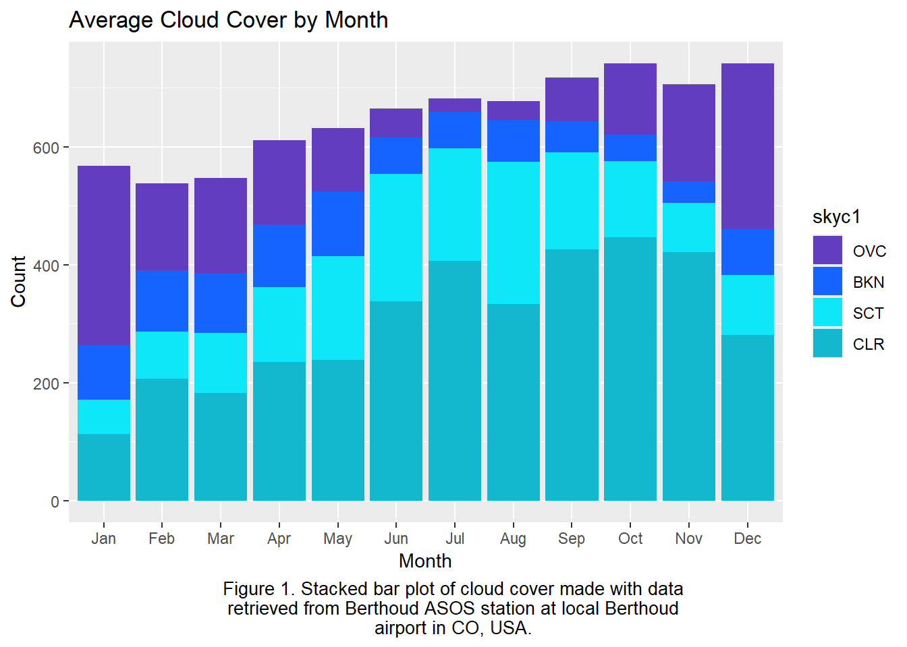
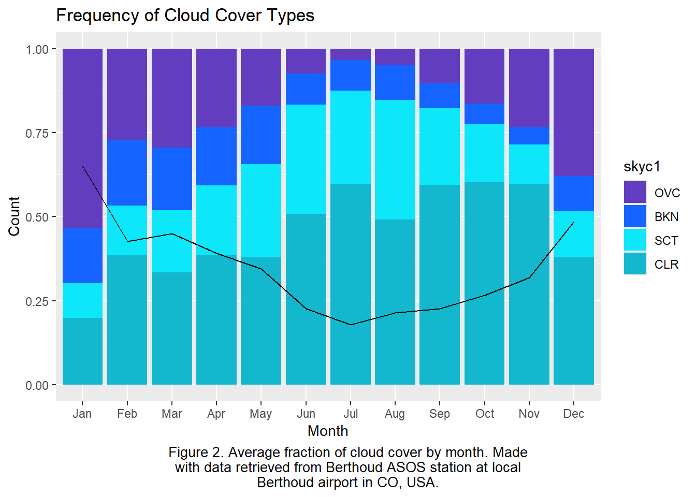
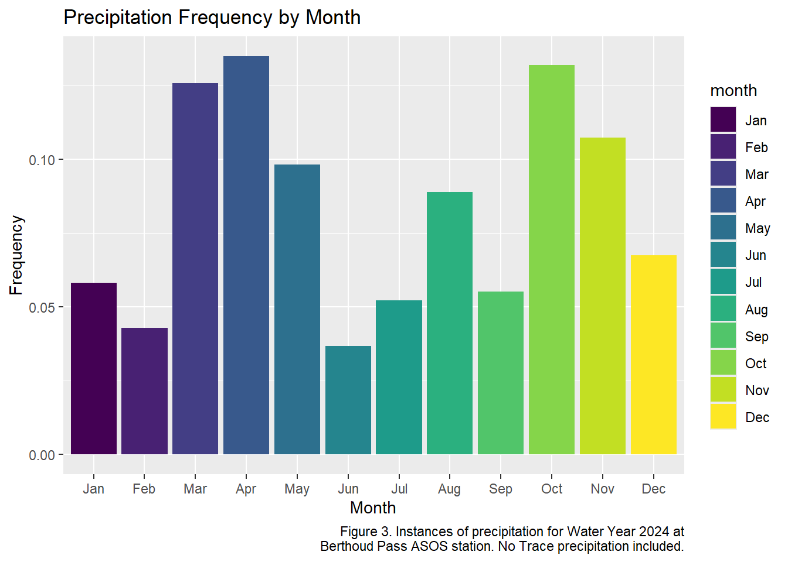

Chapter 2 Assignment 4: Cloud Cover Data and Precipitation
library(tidyverse)
library(stringr)
library(lubridate)
library(paletteer)
CloudCover <- read.csv("Data/asosclean.csv")
LowerCC <- CloudCover %>%
mutate(Date = date(Date),
month = month(Date, label = TRUE)) %>%
filter(skyc1 %in% c("BKN", "CLR", "OVC", "SCT")) %>%
mutate(skyc1 = factor(skyc1, levels = c("OVC", "BKN", "SCT", "CLR")))- Cloud Cover Probability: From the cloud cover, determine the monthly frequency of different cloud cover types (clear, few, scattered, broken, and overcast). It is acceptable to consider only the lowest cloud deck; and
ggplot()+
geom_bar(LowerCC, mapping = aes(x = month, fill = skyc1), na.rm = TRUE)+
scale_fill_paletteer_d("fishualize::Chlorurus_microrhinos")+
labs(
title = "Average Cloud Cover by Month",
caption = str_wrap("Figure 1. Stacked bar plot of cloud cover made with data retrieved from Berthoud ASOS station at local Berthoud airport in CO, USA.", width = 60),
x = "Month",
y = "Count",
color = "Legend"
)+
theme(
plot.caption = element_text(hjust = 0.5, size = 10), # Center-align caption, adjust size
plot.caption.position = "plot"
)
- the average monthly fraction of cloud cover (the mean of the hourly cloud cover per month). Plot ii) as a line on a stacked bar chart for the monthly frequency.
FracCC <- LowerCC %>%
mutate(skyc1_frac = (case_when(skyc1 == "CLR" ~ .05,
skyc1 == "SCT" ~ .25,
skyc1 == "BKN" ~ .5,
skyc1 == "OVC" ~ 1))) %>%
group_by(month) %>%
summarize(avg_skyc1 = mean(skyc1_frac)) %>%
distinct()
ggplot()+
geom_bar(LowerCC, mapping = aes(x = month, fill = skyc1), position = "fill", na.rm = TRUE) +
geom_line(FracCC, mapping = aes(x = month, y = avg_skyc1), group = 1) +
scale_fill_paletteer_d("fishualize::Chlorurus_microrhinos")+
labs(
title = "Frequency of Cloud Cover Types",
caption = str_wrap("Figure 2. Average fraction of cloud cover by month. Made with data retrieved from Berthoud ASOS station at local Berthoud airport in CO, USA.", width = 60),
x = "Month",
y = "Count",
color = "Legend"
)+
theme(
plot.caption = element_text(hjust = 0.5, size = 10), # Center-align caption, adjust size
plot.caption.position = "plot"
)
- Precipitation Probability: From the precipitation data, determine the monthly frequency of precipitation (how often does precipitation occur). Plot this frequency (fraction or percent) to compare the occurrence without and with including trace precipitation events.
Precip <- LowerCC %>%
select(Date, Time, month, p01mm)
PrecipCount <- Precip %>%
filter(p01mm > 0) %>%
group_by(month) %>%
summarize(precip_occur = n()) %>%
mutate(frequency = (precip_occur/sum(precip_occur)))
ggplot(PrecipCount, aes(x = month, y = frequency, fill = month)) +
geom_col()+
labs(
x = "Month",
y = "Frequency",
title = "Precipitation Frequency by Month",
caption = str_wrap("Figure 3. Instances of precipitation for Water Year 2024 at Berthoud Pass ASOS station. No Trace precipitation included.", width = 60)
)
- What is the most common storm type to bring winter precipitation to your watershed and why? Consider the four different synoptic types of precipitation (convective, frontal, cyclonic, orographic).
Orographic is the most common storm type to bring winter precipitation to my watershed because the Rocky Mountains create an orographic lifting effect. This lifting effect leads to cloud creation on the way up the Western slope, which then dumps precip on sites such as this one.